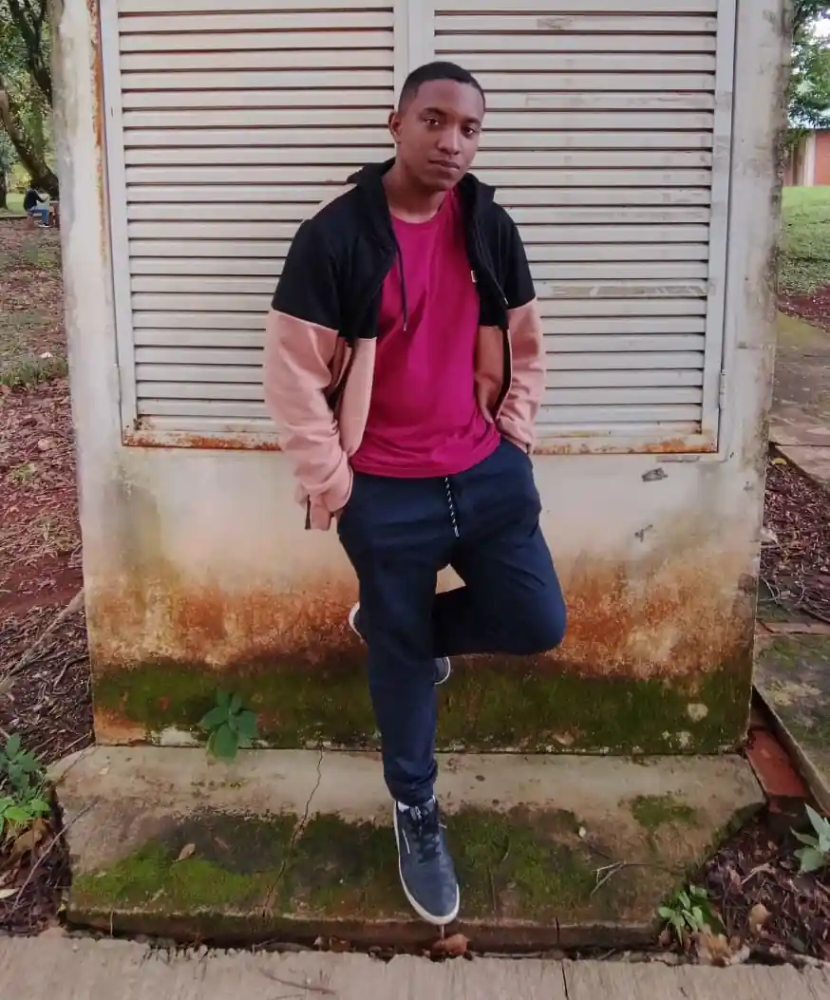

Skybound Echoes

00:00/00:00
Raise a Glass

00:00/00:00
Autumn

00:00/00:00
Nathan Barbosa, known artistically as NBTX, is a talented music producer who began his journey in 2018. His stage name, derived from Nathan BeatX, reflects his passion for music and creativity. Using FL Studio as his main tool, NBTX has stood out in the production of versatile tracks and beats. Always seeking to improve his skills, he aims to offer high-quality projects for game producers and artists looking for a dedicated and innovative professional in music creation.
